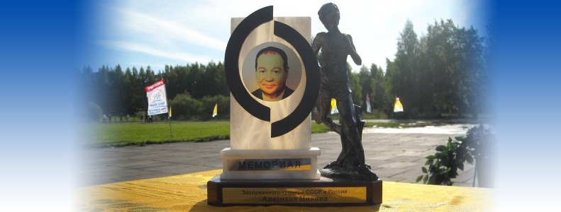

Дата
Место
Название
2012 Зимний сезон
10-11.03.2012
г. Киров
Областные традиционные соревнования по легкоатлетическим многоборьям памяти ЗМС Григория Дегтярёва
29-01.03.2012
г. Киров
Седьмые Детские спортивные игры Кировской области
Рейтинг спортсменов на видах спортивной программы. Зимний сезон 2012
18-19.02.2012
г. Киров
Зимний Чемпионат города Кирова по лёгкой атлетике
11-12.02.2012
г. Киров
Чемпионат Кировской области по лёгкой атлетике
04-05.02.2012
г. Киров
Открытые Чемпионат и Первенство КОГАОУДОД "ВятОСДЮСШОР" по лёгкой атлетике"
28-29.01.2012
г. Кирово-Чепецк
Первенство Кировской области "Российская шиповка юных"
27-29.01.2012
г. Пенза
Первенство России по легкой атлетике (до 18 лет)
21-22.01.2012
г. Пенза
Первенство Приволжского федерального округа по легкой атлетике в закрытом помещении
14-15.01.2012
г. Киров
Первенство города Кирова по лёгкой атлетике "Шиповка юных"
08.01.2012
г. Киров
Открытое первенство КОГАОУДОД "ВятОСДЮСШОР" по лёгкой атлетике "Русская метелица"
07.01.2012
г. Киров
Традиционные соревнования по лёгкой атлетике "Рождественский старт"
24-25.12.2011
г. Киров
Первенство Кировской области по лёгкой атлетике
18.12.2011
г. Киров
Традиционные соревнования по прыжкам в высоту XVIII мемориал Чарушникова
11.12.2011
г. Киров
Традиционные областные соревнований по прыжкам в длину с разбега "Прыжок в Новый год"
10-11.12.2011
г. Ярославль
Межрегиональный легкоатлетический турнир памяти Заслуженного тренера России Альберта Ивановича Таланова
03.12.2011
г. Киров
Открытое первенство КОГАОУДОД "ВятОСДЮСШОР" по бегу
11-12.11.2011
г. Казань
Традиционный турнир по легкой атлетике памяти Заслуженного тренера России Юрия Михайловича Красильникова